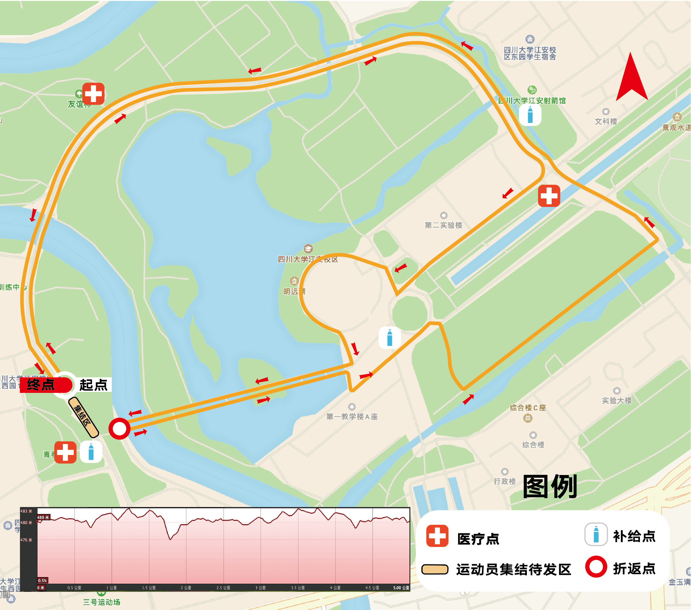

学院通知 · 竞赛比赛
四川大学建校124周年暨华西医学成立110周年庆 第三届“乐跑回家”校园健身跑活动 报名须知
发布时间：2020-09-25
一、赛事基本信息 （一）比赛日期与时间： 2020年9月26日 星期六 下午15:00 比赛项目： 5km竞速组、5km华西医护跑团组、5km健身组 参赛资格及规模 1、参赛对象：凡四川大学校友（含教工）、在校学生均可报名参赛（注：今年赛事限省内校友参加） 参赛规模：2000人。 5km竞速组500人，其中：校友150人；教工100人；学生250人。 l5km华西医护跑团：300人 l5km健身组1200人：学生1200人 比赛路线： （1）路程：5km竞速组、5km华西医护跑团组、5km健身组的比赛线路相同，分批出发。具体行程：青春广场（起点）沿环形大道西段→白石桥→环形大道北段→明远大道→绕图书馆外围上长桥→长桥尽头折返（ 如遇雨取消本路段 ）→经过第一教学楼→启明路到德水边→折向环形大道东段，沿环形大道至青春广场（终点） （ 2 ） 图示 二 、 参赛选手身体状况要求 （一）参赛要求 参赛选手须身体健康（持健康证明），并有经常参加跑步锻炼或训练的习惯。有下列疾病者不宜参加比赛： 1、先天性心脏病和风湿性心脏病患者； 2、高血压和脑血管疾病患者； 3、心肌炎和其他心脏病患者； 4、冠状动脉病患者和严重心律不齐者； 5、血糖过高或过低的糖尿病患者； 6、其它不适合运动的疾病患者。 三 、 医疗救护 组委会在赛道旁设立固定医疗点，并在固定医疗点、饮水站及赛道沿途安排医疗志愿者和工作人员，协助医疗救护和维护比赛秩序，参赛选手有问题可以随时求助。 四 、 组委会联系人 潘老师，联系电话：18980010881 徐老师，联系电话：13550374215 蒋老师，联系电话：15680996496 五 、 赛事安全提醒 1、当天身体不适的参赛选手不能参加比赛； 2、注意赛前用餐和休息； 3、提前进行赛前适应和热身练习； 4、参赛选手妥善保管好自身贵重物品。 六 、 本规程解释权属组委会。未尽事项，另行通知。 赛事组委会 二0二0年九月
